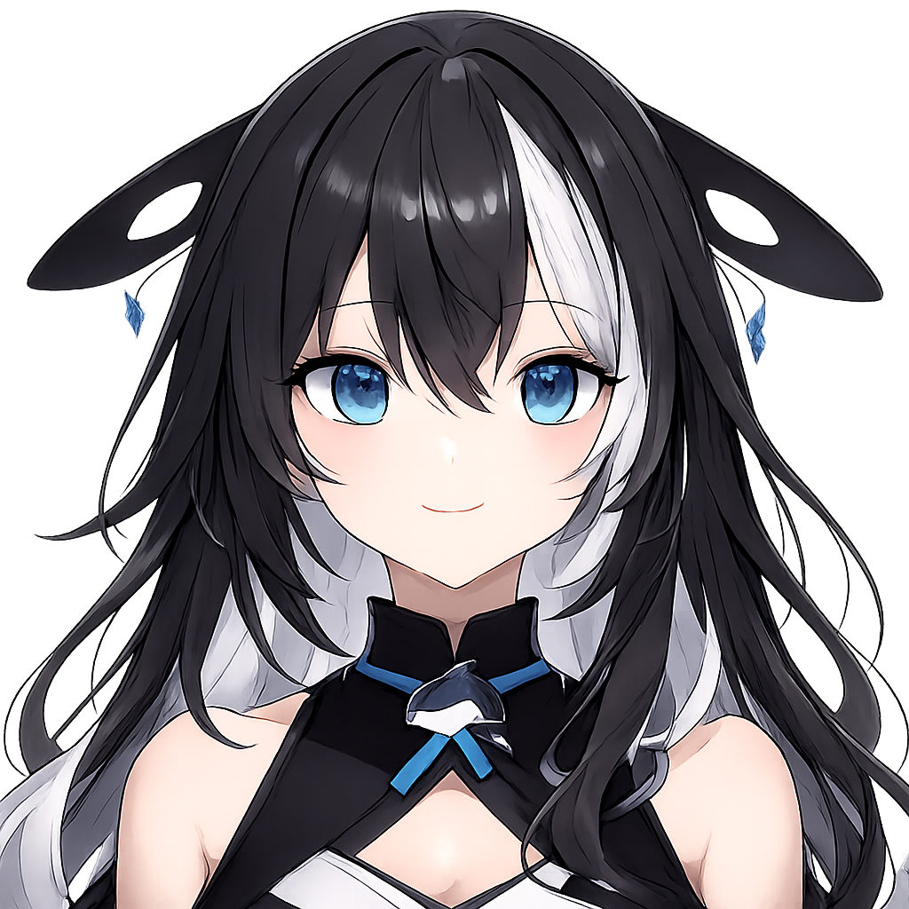
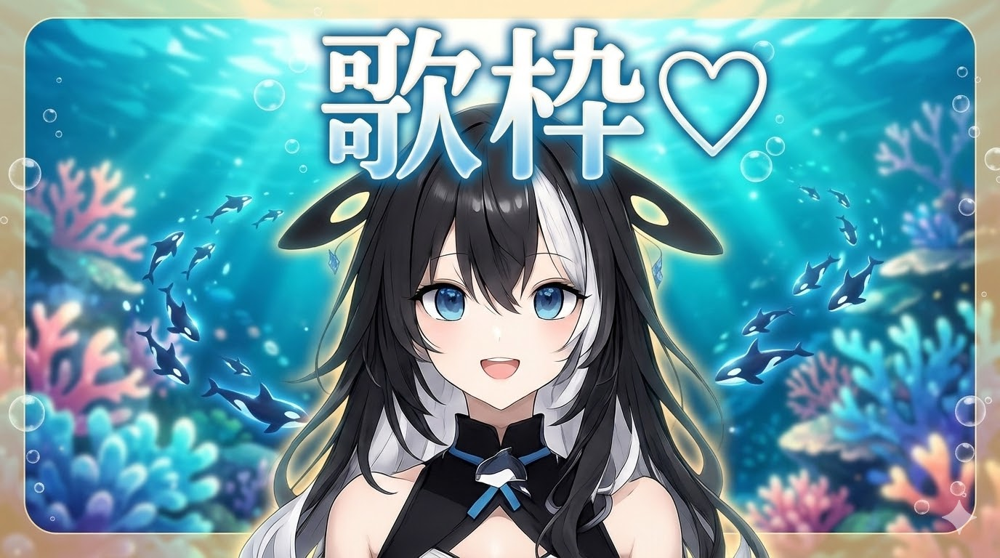
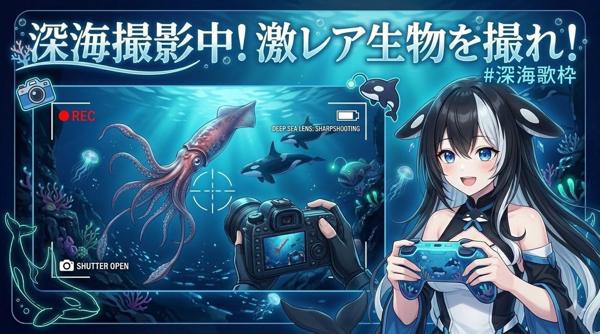
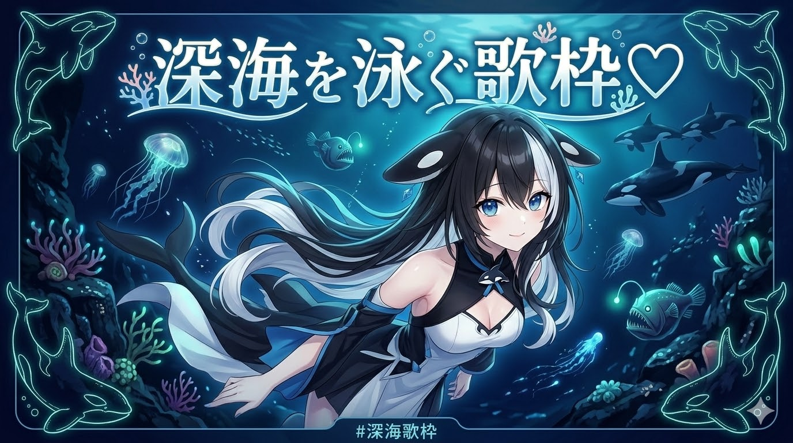
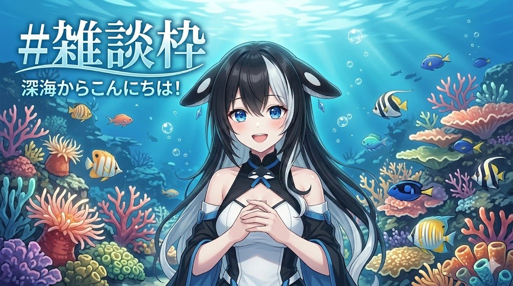

社地オルカ
@Orca_Shachi ・ チャンネル登録者数 45.0万人 ・ 220本の動画
過去のライブ配信

3.5万回視聴 ・ 4時間前

2.2万回視聴 ・ 昨日
5.5万回視聴 ・ 2日前

3.4万回視聴 ・ 3日前

2.7万回視聴 ・ 1週間前


アップロード動画

10万回視聴 ・ 3週間前

55万回視聴 ・ 3週間前

3.1万回視聴 ・ 3週間前

23万回視聴 ・ 4週間前
Shorts

3.2万回視聴

54万回視聴

43万回視聴
過去のライブ配信
3.5万回視聴 ・ 4時間前
2.2万回視聴 ・ 昨日
5.5万回視聴 ・ 2日前
3.4万回視聴 ・ 3日前
2.7万回視聴 ・ 1週間前
作成した再生リスト

コミュニティ投稿
社地オルカ 4時間前
21:00からは「歌枠」だよ！⚓絶対に見に来てね！セットリストの予想、待ってるよ〜！✨
社地オルカ 2日前
洋楽やっぱ難しい～～～！もっともっと練習しないと…⚓